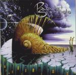

Home Artist links Label link

| Artist: | Rocket Scientists |
| Title: | Oblivion Days |
| Label: | Transmission TM-018 |
| Length(s): | 63 minutes |
| Year(s) of release: | 1999 |
| Month of review: | 01/2000 |
Line up
Mark McCrite - lead and harmony vocals, acoustic and electric guitars
Erik Norlander - keyboards, backing vocals
occasionally with
Tommy Amato - drums, percussion
Neil Citron - guitar
Greg Elis - drums, percussion
Tony Franklin - fretless bass
Lana Lane - harmony vocals
Arjen Anthony Lucassen - guitar
Don Schiff - chapman stick, ns/stick, bass
Tracks
| 1) | Dark Water Part Three: Neptune's Sun | 1.46
|
| 2) | Aqua Vitae | 6.26
|
| 3) | Oblivion Days | 7.06
|
| 4) | Archimedes | 5.35
|
| 5) | Banquo's Ghost | 5.57
|
| 6) | Space: 1999 | 4.35
|
| 7) | Escape | 10.00
|
| 8) | Break The Silence | 5.55
|
| 9) | Dark Water Part Four: Heavy Water | 4.38
|
| 10) | Wake Me Up - Live In Tokyo (bonus) | 6.20
|
| 11) | Stardust - MM96 Mix (bonus) | 4.54
|
Summary
Only a few weeks ago I first heard a Rocket Scientists song. It was from
their Brtual Architecture (I'm not sure what the title was, but it was the
eleventh track and a very good track). I had also heard some good things about
their latest on Transmission (also the label of Ayreon) and it turns out
that Lucassen is featured on this album as well.
The music
The album opens with the dark instrumental Neptune's Sun (Dark Water pt 3).
Dark and atmospheric. We move right into the heavy percussion of Aqua Vitae
with all out keyboards (a la Emerson), but the song itself is very melodic.
Maybe a little bit of The Flower Kings here. The vocals however are quite
different. A driving song with mellow verses and a powerful accessible chorus
in which also Lana Lane makes her presence known. Halfway we get a some
rest in the Beatlesque follow up: a great vocal melody here, after which the
powerful guitar sets in and some euphoric keyboard playing lead into the
repetition of the chorus. Very good.
The titletrack then opens spacey. The plodding rhythm and the sawing of the
rhythm guitar form the backdrop for the recited vocals. The song reminds me
a bit of Ayreon on Actual Fantasy, but is less cold because of the use of the
vintage keyboards. The instrumental intermezzo is for the keys this time.
Swirling passages of loud keyboards pave the way for the more up-tempo guitar
solo. The harmony vocals remind me a bit of mid eighties Eloy (but without the
accent). Archimedes is an instrumental. It is a bit playful, starting out
as being somewhat psychedelic, but then taking a turn for the ehm Alan Parsons.
Maybe I should explain. The rather bouncy part reminds me of I think Lucifer
by the Alan Parsons Project. The use of guitars is quite unexpected. The
least interesting of the tracks so far. Arriving at MacBeths banquet with
Banquo's Ghost. This is a rather accessible, moody song with a memorable
vocal melody. The intermezzo halfway features some heavy keyboard solo's on
a driving rhythmic backdrop. At the end the vocal part comes back to close the
song down. Especially in the songs it shows that the band knows how to write
SONGS that are then arranged for a progressive band. Space: 1999 was written
by Barry Gray (I read for a TV show from the seventies). A powerful driving
instrumental with lots of heavy percussion and uplifting synths (and the
beginnings of a tango). Escape is with ten minutes the longest song on the
album. It opens still rather quietly with clavecimbel and cello like sounds
as backdrop for the first vocal part. During the poppy chorus the band lets
loose. During the second vocal part the backdrop is more pianic and after
the second chorus we get a moody intermezzo (marimba like) and a wailing
guitar (played by Lucassen). Drums and "marimba" continue this groovy track.
Break The Silence is a more mellow and straightforward piece. Again a very
memorable piece with a good vocal melody. The regular album closes with
Dark Water Part 4: Heavy Water. You will have guessed the style of this
track: heavy. However it has some atmospheric parts too.
After ten minutes of waiting (if you're stupid) we come to the first bonus
track: a live version of Wake Me Up. Lots of mellotron opening the song
and on the whole it seems a bit more accessible than the music on this
album, but the ingredients are there. Stardust (previously unreleased) is a
rather accessible track and it sounds quite familiar already. The track can be
likened the Beatlesque part of Aqua Vitae. Lana Lane does the chorus on this
mid-tempo song. A bit too light maybe, but it's a nice song.
Conclusion
Power, melody, bombast and good production make this very symphonic album a
must for lovers of Ayreon, Eloy, Spocks Beard and I could name a few more
names. This is not to say that the band in anyway imitates these bands, but
I'm sure people who like the bands named shall also be able to appreciate this
band. Lots of keyboards on this album, but don't forget it also features some
three guitarists and you'll be sure to find quite many a solo from them.
Highly recommended.
© Jurriaan Hage